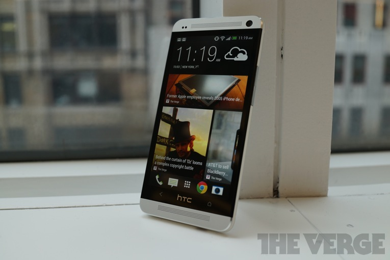
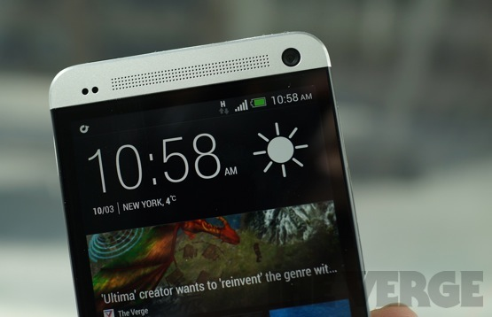
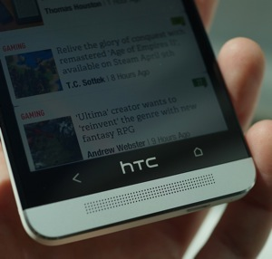
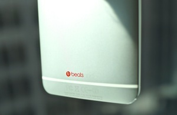
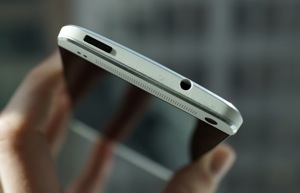
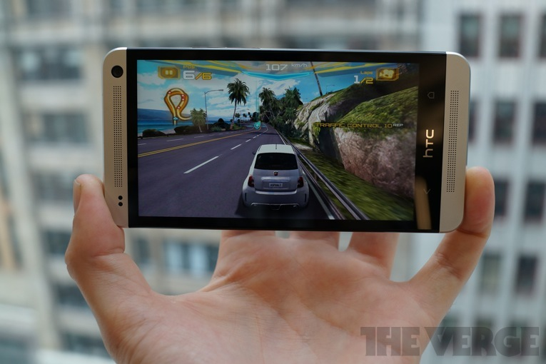
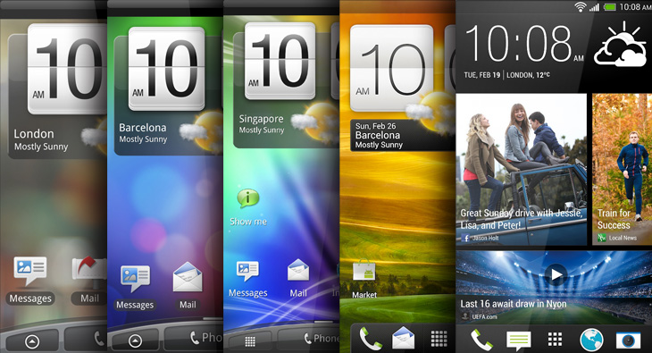
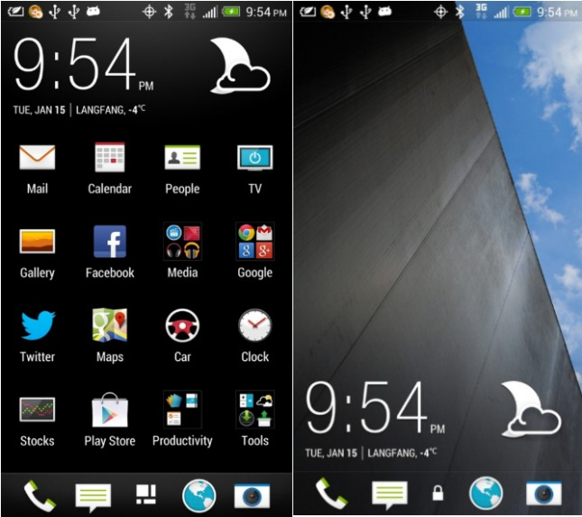
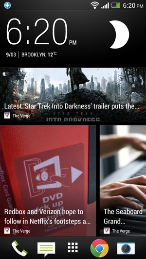

LG G2 review
LG G2 review
| Home | History Of smartphones | Reviews | Best cameraphones | Best android smartphoes of 2013 |


The Android market has changed radically in the past couple of years. Where we once had a spec war, with manufacturers racing to release ever-more powerful smartphones as quickly as possible, now it's turning into a marketing battle ' and Samsung is winning by a mile. HTC, by comparison, isn't doing so well. The company has learned some important lessons about not flooding the market with iterative designs, and the culmination of that is the aptly-named HTC One. It's HTC's flagship, the one device it's putting all its weight behind.
It might seem a little reductive to only consider the HTC One in comparison to Samsung's as-yet unseen Galaxy S 4, but the truth

is that the HTC One can only succeed if, it can steal back some of the marketshare it lost last year when the One X, which we found superior to the Galaxy S III in many ways, failed to compete with Samsung's device.
The playbook this year looks surprisingly similar. The HTC One has top-notch hardware design and specs that are as good or better than anything else on the market today. But that's long been the case with HTC, and it hasn't been enough. So instead the company is making two gigantic bets: a surprising camera that rethinks how you take photos, and custom software that reimagines the home screen. Both features are likely to be polarizing, but the real question is whether the buzzwords, features, and HTC's technical 'innovation' add up to enough to convince consumers to give the phone a chance.

A quick note: HTC tells me my review unit isn't a retail model. That should mean only that it's not in retail packaging, but it's possible that there are slight software changes coming over time. I'll update here if that happens.
A love letter to a smartphone
I use a lot of different phones, and over time they've all sort of blended together. Big, plastic slabs that look and feel as if they all came from a single design meeting two years ago. It's been a long time since I had an instinctive, visceral reaction like I did when I first took the One out of its box.
The One is gorgeous. The aluminum slab's design is both totally unique and somehow still understated. HTC did a really clever job of making the phone's various parts double as its design flair ' the front-mounted speaker grilles give the phone a rugged, industrial look, and the edge-to-edge glass looks sleek and polished. The aluminum front and back plates (the device comes in black and silver, though I much prefer the silver model I tested) are joined by a matte white plastic siding that I worry might get dirty over time, but as I've used it so far I haven't had any issues. Two strips of that same white plastic run across the back, breaking up the aluminum backing so the internal antennas can send signals out; there's also a big camera lens, plus HTC and Beats logos and a bit of fine print. There's a volume rocker on the right side, and a headphone jack and Micro USB port (this doubles as Micro HDMI via MHL) on the bottom.
I Kept Inventing Excuses To Use The One, Just So I Could Hold It
At first glance, it's beautiful, but a bit cold and inhuman ' lots of clean lines and sharp edges, plus at more than 5 inches tall it's just a big phone. But the One is actually incredibly comfortable to hold: the slightly curved back nestles into your palm, and the chamfered edges slope from back to front, so your hands curl naturally around its sides. There are a couple of awkward ergonomic quirks, like the top-mounted power button that is always impossible to reach on such big phones, and especially the Home button that's far enough to the right that it's hard to hit unless you're holding the phone in two hands. Even if I never did stop pressing the center-located HTC logo trying to go back to the home screen, the One feels a lot better than most phones this size, and I did eventually learn how to shimmy the phone up and down in my hand to reach the various parts of the screen and body. Luckily I haven't dropped it while doing so, but even if I did I suspect the One could handle it better than many of its more fragile counterparts like the Nexus 4.
Htc Keeps Besting Its Own Hardware Efforts

Once you turn it on, the One gets even prettier. Its 4.7-inch, 1920 x 1080 display (that's 468 ppi) is the sharpest I've ever seen. Whether you want to call it "Retina" or something else ' I'm sort of surprised HTC doesn't have a goofy name for it ' the fact remains that the screen is tack-sharp, colors are fantastic, blacks are impressively deep, and it looks great from any angle. It's not notably better than a device like the Droid DNA, but that's not a bad thing ' phone screens are getting really, really good, and the One's display measures up in every way. Well, every way but one: oddly, the screen doesn't get very bright, and it can be hard to see outdoors in sunlight. But I'm a master of the shield-your-phone-from-the-sun move, so that didn't bother me too much.
By itself, the screen makes the One a great option for watching movies or playing games, but the front-firing speakers above and below the display take things to a whole other level. With the phone held sideways, the two create a surprisingly powerful and wide stereo effect. More importantly, they get loud enough that you don't have to hold the phone up to your ear to hear anything ' a pose I'm glad to no longer have to strike. There's some Beats processing going on, and for once it does seem to help; the software adds some low-end where the speakers otherwise lack it, and fills out the sound profile a bit. The whole setup is called BoomSound, and while I despise the marketing term, I love the effect. Make no mistake, these are still phone speakers, and I still use headphones more often than not, but the One's audio setup is a huge leap beyond virtually every other smartphone or tablet.
At the risk of repeating myself, I love the look and feel of the One. HTC gets what Samsung doesn't ' fit and finish really matter, and great hardware makes the One pleasant to use in a way Samsung's slippery plastic frames just aren't. I always try to use a device exclusively when I'm testing it, but nearly always come back to my iPhone because I just enjoy using it more. While using the One, I all but forgot I even had another phone.
A Bold Bet, But It Doesn't Totally Pay Off
That camera is the feature on which the One's marketing power and ultimate success may depend. It's called an "UltraPixel" camera, and though that's almost entirely a marketing term, it does signify a different approach for HTC. Instead of trying to best the iPhone 5's 8-megapixel camera, or compete with the insane 13.1-megapixel sensor in the Sony Xperia Z, HTC went the other way. The One has a 4-megapixel camera, but HTC promises that's a good thing: these larger pixels can take in up to three times more light, which should improve the low-light performance substantially. Since it's collecting fewer data points per shot, the camera can also shoot faster, apply filters faster, and share to the internet faster.
Htc One Sample Pictures View Full Gallery
Strictly speaking, all those claims are true. The One does capture a lot of light, and takes surprisingly bright images (with a 16:9 aspect ratio instead of 4:3 by default, which you should change) where my iPhone 5 captured only darkness, and thanks to its optical image stabilization it can basically see in the dark and take steady photos. It's also really fast to apply filters or switch scene modes, and it shoots so fast I sometimes didn't believe it had actually taken a picture.
The speed also allows for a cool feature called Zoe, which takes one second of video before you press the shutter and three seconds after ' it's actually shooting video and stills simultaneously, and then stitching them together so you can scrub through the video, but then grab a full-res still from whatever spot you want. It's a cool tool, and helped me get some really great action shots I definitely would have missed otherwise, though I definitely forgot to turn it off a few times and ended up with about forty photos of buildings when I just meant to shoot one. Less useful is the HTC Share tool, which lets you soundtrack and upload "highlight videos" of Zoes, videos, and still shots to the web ' it's cool, but it's kind of like Vine, except your clips only last a few months and no one's ever going to use it. Of course, you can also upload to Facebook and the like, and that's a much better option.
That's all nice to have, but it doesn't change the fact that the pictures I took on the One just don't look very good. Sure, shots are bright and colors are good, but it's clear noise reduction processing is running roughshod all over the photos you take, leaving them soft and mushy even in good lighting. Nothing looks sharp or crisp, no matter the situation. Things look fine at Facebook or Instagram sizes, which HTC is clearly betting is all you need, but when you zoom or crop, photos lose a lot of their luster. I like the shots I'm able to get with the One's camera ' I've started taking more pictures in dark restaurants, or on the street at night ' but I'm not always impressed with the shots I get.
1080p video footage is a more consistent beneficiary of the new technology, since you're never really going to zoom in on video. The One shoots clean, bright video even in bad lighting, and though there are some issues with softness and noise it's much less noticeable here. It's fast and responsive when recording, only taking about a half-second to switch modes and start rolling ' the autofocus tends to hunt a bit while you're shooting, but all in all I'm happy with the video performance on the One.
Marginal power returns
I'm fairly confident there's a kitchen sink inside the HTC One. This phone has everything else, certainly, with nothing but high-end specs across the board. It starts with Qualcomm's new quad-core Snapdragon 600 processor, a remarkably powerful chip clocked here at 1.7GHz. There's also 2GB of RAM inside, plus the standard set of radios and sensors: Bluetooth 4.0, NFC, Wi-Fi, DLNA, Miracast, an accelerometer, gyroscope, and GPS ' there's even an IR blaster embedded in the power button, just for good measure.
It all makes the One an impressively powerful phone across the board. Its benchmark scores are off the charts (a Quadrant score of 12,189 is more than double most phones from even a few months ago), and in practice the phone is virtually flawless. Even playing Asphalt 7: Heat, an intensive racing game that makes most phones stutter and drop frames, was near-perfect on the One. (Plus, the speakers go a long way toward making you feel like you're driving a car bigger than something you'd find at Toys R Us.) The only performance problems I had are the same ones no Android phone has solved, like the stuttered and jumpy scrolling in Chrome ' I don't blame HTC for that, I blame Google. But Google's fixing its problems, and HTC doesn't really cause any ' this phone performs beautifully.
This Much Horsepower Is Overkill Until Apps Can Take Advantage

I didn't get to test an LTE version of the One ' I'm using the unlocked European model, and in exchange for actually affordable plans and the ability to use any phone you want, our European friends are for the moment without LTE. I used an AT&T SIM card in the One, though, and found reception and call quality to be as good as I'd expect ' if anything, the One picked up signal in a couple of subway stations and cave-like rooms I didn't expect. The One's noise cancellation is really good, muting street sounds the iPhone 5 let through, though the sound quality was only average. Speakerphone is really good because the speakers are really loud, but the microphone wasn't overly impressive. Basically, it's a cellphone ' a good cellphone, maybe, but still a cellphone.
For all the things the phone does well, it doesn't do much of anything for very long. The combination of a fast processor, high-res screen, and always-updating software is an ugly one for battery life, and indeed I struggled to make the One last a full day. There's a Power Saver mode that helps a lot, but it also cripples the phone ' it turns off most of your wireless connections when you turn off the phone's screen, for instance, which seems like a steep price a couple extra hours of power. The Sony Xperia Z has a similar feature, but it smartly lets you whitelist apps that can still operate; I'd be much more interested in this feature if I could make sure my email and Twitter were still pushing updates. In more practical use, you're going to want a charger nearby, since I killed the battery with about ten hours of tweeting, browsing, emailing, and not that much else. This is an unpleasant, sadly unremarkable side effect of big screens and fast phones, but's a shame nonetheless.
Update: there's been some debate about the battery life on the One, and a few people wondered if I'd gotten a bad unit. HTC shipped me a second, and I re-ran a lot of tests to see if anything was different. First, I ran the Verge Battery Test, our standard test that cycles through a series of popular websites and high-res images with brightness set to 65 percent. The One lasted 4 hours, 48 minutes, a decidedly average score ' it's slightly better than poor performers like the Droid DNA (4 hours, 25 minutes), but a long way from our battery life favorites, the Droid RAZR HD (9 hours, 35 minutes) and the RAZR Maxx HD (12 hours, 43 minutes). Streaming the 103-minute Ferris Bueller's Day Off over Wi-Fi from Netflix also burned 58 percent of the device's battery. If you're using it normally (which means relatively lightly), it should last you a whole day, but the One is a decidedly average performer when it comes to battery life.
New Sense

Two things have been universally true of Android phones over the last few years: stock Android is the best Android, and HTC's Sense skin is bloated and overwrought. The One certainly can't change the former ' I immediately missed the clean and cohesive look of Android 4.2 on the Nexus 4, plus the features the One eschews by only offering Android 4.1.2 ' but it does soften the Sense blow. HTC's skin's biggest fault was always that it slowed down an otherwise speedy operating system, and that's not really the case here.Aesthetically, there are still some frustrating changes, like the cartoonish icons in Settings and a few ugly app icons, but throughout the UI HTC has exercised some much-needed restraint. (Though in case you forget what you're using, that flipping clock widget is only a couple of taps away.)
This time, instead of re-skinning Android, HTC re-thought it. In a very Windows 8-like move, the company decided that our home screens are an underused space. Why have a desktop full of icons and shortcuts, they seem to be asking, when you could fill it with actual content? HTC answers with BlinkFeed, a Flipboard-like news reader that occupies your entire home screen. Basically, you pick a bunch of news sources (full disclosure: The Verge's parent company Vox Media is a BlinkFeed partner), or connect to Twitter and Facebook, and your phone's home screen becomes a constantly updating list of stories and updates you might want to read. It's a handy tool, sure, but I really don't like having it there every time I unlock my phone' it's like having someone shove a newspaper in your face every time you open your eyes, and left me overwhelmed by the idea of turning my phone on. You can't turn BlinkFeed off entirely, but you can set another panel as your home screen, and I found having BlinkFeed's news one screen away was really nice for when I had a couple of minutes to kill. For those moments, it's great; for the moments when I don't have those couple of minutes to kill, I much prefer the normal home screen.
Blinkfeed Is Handy At Times, But It's An Exhausting Home Screen


Once I changed that, swapped the app drawer from its iOS-aping "custom" sorting to alphabetical, and set it to show more than nine apps at a time, I didn't have much trouble with Sense. A lot of things about Sense aren't necessarily worse ' in fact some, like the tiled multitasking menu, are better ' they're just different when they don't need to be. The worst offenses are when HTC seems to have refused to decide how best to do something, so it just offers every imaginable solution. In the People app, you can navigate by swiping, or tapping, or long-pressing, and it just gets confusing how best to do something. It makes Android feel unintuitive in places it really doesn't have to, and gets away from the cohesive design philosophy Android has cultivated over the years. I learned to ignore the excessive options and just go about my day, but it's kind of a disservice to how usable and smart Android can be.
Android's notification system already far outstrips iOS, and HTC adds a couple of things I like even more. There's a notification LED embedded in the top speaker grille, which shows when you have a message, a missed call, and the like ' you can customize it, too, to only see what you want to see. You can also set the One to show certain notifications on the lock screen, and then swipe the icon up to launch straight into the proper app; it's really handy for seeing text messages, and neatly combines the strengths of both iOS and Android's notifications.
There's not much bloatware on the One I tested, though that's almost certain to change once the American carriers get their bloat-loving hands on the device (look no further than the Droid DNA for an example). This model comes with a few third-party apps like SoundCloud and TuneIn Radio, and adds or redesigns a handful of first-party apps too. I really like the Google Tasks-syncing Tasks app, the Notes app that lets you take audio and written notes simultaneously, and even the News & Weather app despite its apparent total lack of connection to BlinkFeed. The best add-on is the TV app, though, which works with the IR blaster to control your whole home theater system. It's not a particularly elegant app ' it's basically an ersatz version of Peel, combining a basic on-screen remote control with a visual TV Guide ' but it's easy to set up, and has already come in handy a number of times when my actual TV remote was either lost in the couch cushions or just too far away for my lazy self to go get.
Sense Cant Beat Stock, But It's Not So Far Behind Anymore
Wrap-up

8.3 VERGE SCORE 9.4 USER SCORE
Good stuff Bad stuff
- Gorgeous hardware Mediocre camera
- Beautiful, high-res display Poor battery life
- Fast, consistent performance Sense still has some issues
As Good An Android Phone As You Can Buy ' But Samsung Might Have Something To Say About That
I really, really like the HTC One. I'm a sucker for beautiful hardware, and this device is one of the best-designed smartphones I've ever used. HTC's done great hardware before, though, and ruined it with ugly and problematic software ' this time, it's manageable. Not great, not as good as stock Android, but manageable. Here, the problem lies with the camera. Maybe I'm in the minority when I say I care about the quality of my cellphone images, but I do, and the One just doesn't deliver. Its battery life is also disappointing, though I'm not as concerned about that ' it's just a fact of life at this point.
In my quest to find the perfect Android phone, I'm still left wanting. I want the One's hardware, but I want the Nexus 4's software and promise of timely updates ' I've said for a year that HTC should offer stock Android phones, and I'm still convinced the company could save itself with the One plus pure Android. I also want a better camera ' the One isn't bad, it's just mediocre, and I've seen better from Android phones. For now, the list of Android phones worth buying is two items long: the Nexus 4 and the One. Personally, I'd buy the One if I had to choose right now, but with the Galaxy S 4 coming in just a few days, I'm pretty lucky I don't have to choose right now.
Even if Samsung can't best the One later this week, though, the most important question is still unanswered: can HTC find a way to sell a phone, even a great phone, when Samsung has so dominated the Android market? Until it does, it won't matter how good the One is ' but for consumers' sake and HTC's, I hope the company figures it out.